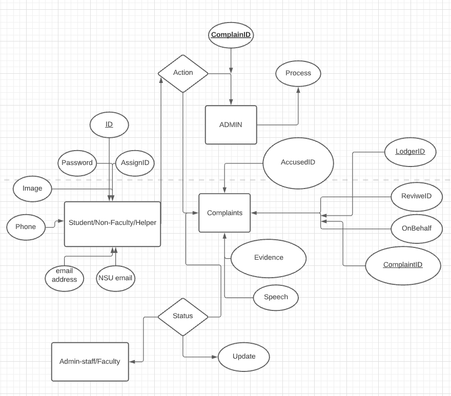
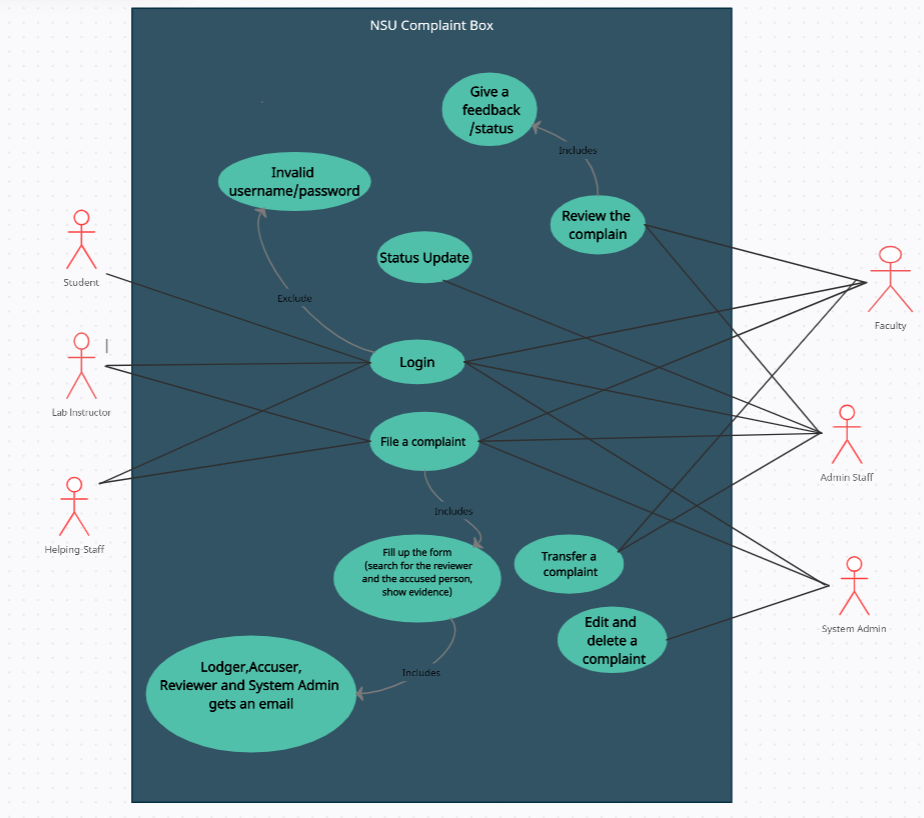

Software Requirements Specification
For
NSU Complain System
Version 1.0.0 approved
Prepared by
Mohammad Ismail Hossain Siddiquee
Mashfiqul Faruque
North South University
March 2022
Table of Contents
- Revision History.........................................................................................................2
- 1.Introduction.............................................................................................................2
- 1.1 Purpose.......................................................................................................2
- 1.2 Document Conventions..........................................................................2
- 1.3 Intended Audience and Reading
Suggestions....................................2
- 1.4 Product Scope............................................................................................2
- 1.5 References..................................................................................................2
- 2.Overall Description.................................................................................................2
- 3.External Interface Requirements.........................................................................4
- 3.1 User Interfaces..........................................................................................4
- 3.2 Hardware Interfaces................................................................................4
- 3.3 Software Interfaces..................................................................................4
- 3.4 Communications Interfaces....................................................................4
- 4.System Features......................................................................................................4
- 4.1 System Feature 1......................................................................................4
- 4.2 System Feature 2 .....................................................................................5
- 5.Other Nonfunctional Requirements...................................................................5
- 6.Other Requirements................................................................................................6
- Appendix A: Glossary..................................................................................................6
- Appendix B: Analysis Models....................................................................................7
- Appendix C: To Be Determined List........................................................................8
Revision History
| Name |
Date |
Reason for changes |
Version |
| |
|
|
|
1. Introduction
1.1 Purpose
The purpose of this document is to present a detailed description of the NSU Complain System. It will explain the
purpose and features of the programme, the
interfaces of the programme, what the programme will do and the constraints under which it must operate. This
document is intended for users of the programme and also
potential developers.
1.2 Document Conventions
This Document was created based on the IEEE template for System Requirement Specification Documents.
1.3 Intended Audience and Reading Suggestions
Typical Users, who are a part of North South University. Such as: Students, Faculties, Non-faculty teaching
staffs, Admin-staffs,System admin & helping hands(Guards,cleaners etc.). Who wants to use Nsu Complain system to use
it's features, such as to lodge a complain, review complains etc.
1.4 Product Scope
NSU Complain System is a programm that it's user can use it to lodge a complain against any individuals of North
South Univesity.
Users can search individuals on this programme & lodge a complaint against them with evidence. Also they can
choose their own
reviewer to review their complain. By using this programme, the users will be able to resolve their complaints
within North South University.
1.5 References
NSU complaint System bitbucket page:
https://bitbucket.org/nabeel_mohammed/cse327.3.5/src/master/Project/
IEEE Template for SRS:
https://northsouth.instructure.com/courses/11115/files/530353?wrap=1
2. Overall Description
2.1 Product Perspective
NSU Complain System is developed for the people of North South University, who are interested to lodge a complain
aginst any individuals of the instiution. With the help of this programme, the users can search the accused in it's
database & lodge a complaint against them with evidence.
It is a programme to help it's users with their complaints to get justification with North South University.It is an
open source project and it has a very active Admin-staffs to support it and provide feedback to users. It was developed
to run on any browser,Windows & Androids.
2.2 Product Functions
Login: Log in into the system with username & password.
Register: Register as a new ID with email, NSU id, name,password etc.
Lodge Complaint: Creation of a new complaint.
Search: Search for the accused person in the database.
Type Complaint: Type details about the complaint.
Record: Record audio for the details about the complaint.
Text: Recoded audio will be converted into text.
Attachmnets: Attach any kind of file as evidence for the complaints.
Select reviewer: Select a person from the faculties to review the complaints.
Submit: Submit the complaints.
Review: To review the complaints.
Comment: Comment any action regarding the review of complaints.
Transfer: To transfer the complaints to another person to review.
Status Bar: Any action taken regarding the complaints will be shown here.
Edit/Delete: Edit or delete a complaint.
Close: Close any complaints.
History: Check history about previous complaints and their details.
Complaint on behalf: File a new complant on behalf of any user.
Add User: Add new user.
Delete User: Delete any user.
2.3 User Classes and Characteristics
Typical users, such as students, faculties, admin-staff, helping hands(Guards,cleaners) who wants to use NSU Complain System
to lodge complaints.
Faculties who wants to review the complaints.
Admins who manages the users, complaints & the system.
Programmers who are interested in working on the project by further developing it
or fix existing bugs.
2.4 Operating Environment
Windows 2000
Windows XP
Windows Vista
Windows 7
Windows 8
Windows 10
Windows 11
Mac OS X
Linux
Android
IOS
2.5 Design and Implementation Constraints
NSU Complain System website is developed in html,css html,css & javascript. The app is developed in flutter.
Both uses a design where every features depend on each other through a well-written API. Also both of them gets
data from the database through the API. The API is built using express and the database by MongoDb.
2.6 User Documentation
User manual
Tutorials for visualization
Tutorials layout
Working process layout
2.7 Assumptions and Dependencies
NSU Complain System website is developed in html,css,laravel & javascript. Therefore it requires Java & laravel
to be installed on the developer's system. The packaages used in flutter must also be present at the time of use. The users can use it's website through any browser. Also they can install
the app on their android/ios device to use it.
3. External Interface Requirements
3.1 User Interfaces
The user interface for the software shall be compatible to any browser such as Internet Explorer, Chrome, Mozilla or Netscape
Navigator by which user can access to the system.
The user interface for the for app shall be compatible to any Android and IOS device.
3.2 Hardware Interfaces
Since NSU Complain System must run over the internet, all the hardware shall require to connect internet will be hardware
interface for the system. As for e.g. Modem, WAN-LAN, Ethernet Cross-Cable.
3.3 Software Interfaces
NSU Complain System website is developed in html,css,laravel & javascript. Therefore it requires Java & laravel
to be installed on the developer’s system. For the users, they can use the website through any browser.
3.4 Communications Interfaces
To use NSU Complain System, an internet connection is required.The system shall use the HTTP protocol for communication
over the internet and for the internet communication will be through TCP/IP protocol suite.
4.System Features
The major feature is voice transcribtion
4.1 System Feature 1
Audio transcribtion.
4.1.1 Description and Priority
High priority. This feature enables users to record an audio which will be trancribed in text.
4.1.2 Stimulus/Response Sequences
The user will click on the record speech button. The user then has to press the micrphone button and if this
is the first time, the user will be promted with a pop up for allowing permisson for audio and bluetooth.
After the user has recoreded the audio the speech will be converted to text.
4.1.3 Functional Requirements
REQ-1:Able to record & store audio.
REQ-2: Able to convert audio to text & store it.
This section demonstrates NSU complaints System’s most prominent features and explains how they can
be used and the results they will give back to the user.
4.2 System Feature 2
Complaint History
4.2.1 Description and Priority
High priority. This feature enables users to see history of their all complaints & their's details.
4.2.2 Stimulus/Response Sequences
The user will click on the history button & a list will show up. All the complaints will be listed there.
By clicking on the complaints, they will be able to see the details, status etc. of the complaint.
4.2.3 Functional Requirements
REQ-1: Able to store every data of every complaints in database.
REQ-2: Categorize them according to the users.
REQ-3: Able to show every details about any complaints the user wants.
5. Other Nonfunctional Requirements
NSU Complain System requires minimum Celeron/Pentium processor & 1 GB of ram to run in the browser. In an Android
device, it must have 1 GB of ram & 50MB of storage to run the app properly. Performance depends on the internet connection
and the processing power of the browser & android devices.
5.2 Safety Requirements
To ensure that no one of NSU Complaint System’s users loses any data while using it (due to a crash or a bug of some kind)
the developer team updates the system regularly. If users encounter any bugs, users can report the bugs so that the developers
can fix it in the next release.
5.3 Software Quality Attributes
NSU Complaint System provides the users with both simple and advanced features. Due to its well designed and easy to use interface
it can be used by both experts and typical users. Users can even record thier complaints who are not comfortable with typing. Thier
recorded audio will be converted into English/Bangla text. Also they can provide evidence as any file they want.
Business Rules
All users needs to be a part of North South University.
All users need a valid email address.
The enrollment system shall include a mandatory email & NSU id input on the user registration form page.
All the complaints & evidences should be recorded in the database in a proper manner.
Any actions related to the complaints, should be notified to every person regarding the complaints.
6. Other Requirements
All data regarding users & complaints should be stored in the database securely. Any action regarding any complaint, should be notified
to every person involved in that matter. Reviwers should always be neutral about every reviews of complaints.
Appendix A: Glossary
References: https://en.wikipedia.org/wiki/Main_Page
Interface: It is a shared boundary across which two or more separate components of a computer system exchange information.
JavaScript: It is often abbreviated JS, is a programming language that is one of the core technologies of the World Wide
Web, alongside HTML and CSS.
Flutter: It is an open-source UI software development kit created by Google. It is used to develop cross platform
applications for Android, iOS, Linux, macOS, Windows, Google Fuchsia and the web from a single codebase.
Huggingface: It is an open-source NLP technology that converts audio to text.
Browser: Web browser (also referred to as an Internet browser or simply a browser) is application software for accessing
the World Wide Web or a local website on the user's device.
HTTP: It is an application layer protocol in the Internet protocol suite model for distributed, collaborative,
hypermedia information systems.HTTP is the foundation of data communication for the World Wide Web, where hypertext documents
include hyperlinks to other resources that the user can easily access
Bugs: A software bug is an error, flaw or fault in computer software that causes it to produce an incorrect or
unexpected result, or to behave in unintended ways.
Complaint: A statement that something is wrong or not satisfactory.
Evidence: A sign which shows that something exists or is true.
Appendix B: Analysis Models
Data flow diagtram:

Uml case diagram:

Appendix C: To Be Determined List
User Manuals
Tutorials
User documentation delivery formats
State-transition diagrams
entity-relationship diagrams